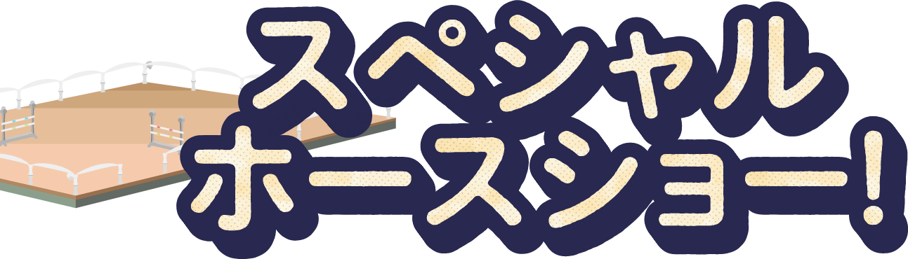

- 1. 人馬挨拶・スマイル
- 2. はだか馬騎乗・常歩（左右回転）
- 3. はだか馬騎乗・後退
- 4. はだか馬騎乗・サイドステップ
- 5. はだか馬騎乗・速歩
- 6. はだか馬騎乗・パッサージュ
- 7. はだか馬騎乗・駈歩
- 8. はだか馬騎乗・ピルーエット
- 9. はだか馬騎乗・ピアッフェ
- 10. 停止している馬の背に立って決めポーズ
- 11. ねころび
- 12. お座り
- 13. はだか馬騎乗・後ろ向き
- 14. 縄跳び
- 15. スペイン常歩
- 16. 足上げ旋回
- 17. セルクル
- 18. 立ち上がり
- 19. お辞儀の馬上に立ち決めポーズ
- 20. スマイル・バイバイ